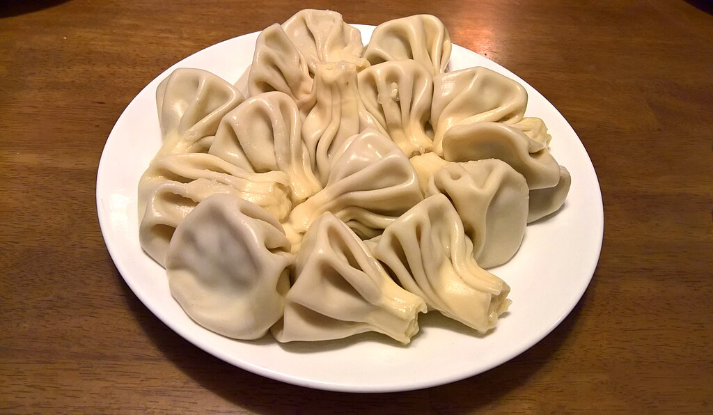

Khinkali Recipe

Description
Khinkali are Georgia’s beloved dumplings, originating in the mountain regions of Pshavi, Mtiuleti, and Tusheti. These plump, pleated parcels are filled with juicy meat and aromatic spices, known not only for their rich flavor but also for the special way they’re eaten — by hand, hot, and juicy, with a careful bite to sip the broth inside before finishing the rest.
Originally made with lamb or beef in the highlands, khinkali became a staple throughout Georgia. Today, they’re often filled with pork and beef, or even mushrooms and cheese. No feast (supra) is complete without a steaming pile of khinkali at the center of the table, drawing people together through their shared joy and technique of eating.
Traditional Khinkali Recipe (Makes ~20 dumplings)
For the dough:
- 3 cups (360 g) all-purpose flour
- 1 tsp salt
- 1 cup (240 ml) lukewarm water
For the filling:
- 300 g ground beef
- 200 g ground pork (or use all beef/lamb)
- 1 small onion, finely grated or chopped
- 2 cloves garlic, minced
- 1 tsp ground black pepper
- 1 tsp salt (to taste)
- ½ tsp ground caraway or coriander (optional)
- ½ cup (120 ml) cold water or beef broth (for juiciness)
Instructions
- Make the Dough: Mix flour and salt. Slowly add water and knead into a smooth, firm dough. Cover and let rest for 30–45 minutes.
- Prepare the Filling: Combine meats, onion, garlic, salt, pepper, and any optional spices. Gradually mix in cold water or broth until the mixture is soft and juicy but not runny.
- Shape the Khinkali: Divide dough into small balls (golf-ball size). Roll each into a thin circle (~4–5 inches). Place 1 tbsp of filling in the center. Pinch and fold the edges into pleats, gathering them at the top and twisting to seal.
- Boil: Bring salted water to a boil. Drop khinkali in, stir once gently to prevent sticking. Cook for ~12–15 minutes, until they float and the dough is firm.
- Serve Hot: Sprinkle with coarse black pepper. Eat by holding the top knot, biting the side to sip the broth, then finish the rest. Don’t eat the knot — that’s tradition!
Home